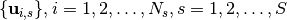

Sampling in Q-Space¶
Table of Contents
Introduction¶
Objectives¶
A good data sampling scheme is important for diffusion MRI acquisition and reconstruction. Diffusion Weighted Imaging (DWI) data is normally acquired on single or multiple shells in 3D q-space. The samples in different shells are typically distributed uniformly, because they should be invariant to the orientation of structures within tissue, or the laboratory coordinate frame. These samples on single or multiple shells are better to be separated as far as possible.
| single-shell scheme | multi-shell scheme | multi-shell scheme (combined for visualization) |
In this tutorial, we are interested in two categories of spherical sampling problems in diffusion MRI,
the continuous category P-C and discrete category P-D.
These two problem categories include the following application problems.
- Single-shell continuous problem (P-C-S).
Given a number
 , how to uniformly distribute points in the sphere?
The problem is for single shell sampling scheme design.
, how to uniformly distribute points in the sphere?
The problem is for single shell sampling scheme design. - Multi-shell continuous problem (P-C-M).
Given
 numbers , how to uniformly distribute these points in shells, i.e. points in the
numbers , how to uniformly distribute these points in shells, i.e. points in the  -th shell,
and meanwhile make all samples from all shells separated as far as possible?
The problem is for multi-shell sampling scheme design.
-th shell,
and meanwhile make all samples from all shells separated as far as possible?
The problem is for multi-shell sampling scheme design. - Single subset from single set problem (P-D-SS).
Given
 known points in sphere, how to uniformly select sub-samples from these points?
The problem is for reducing the number of samples in an existing single shell scheme.
It is also related with P-C-S, because if discretizing the continuous sphere using many points,
then solving P-D-SS is an approximation to solve P-C-S.
known points in sphere, how to uniformly select sub-samples from these points?
The problem is for reducing the number of samples in an existing single shell scheme.
It is also related with P-C-S, because if discretizing the continuous sphere using many points,
then solving P-D-SS is an approximation to solve P-C-S. - Multiple subsets from multiple sets problem (P-D-MM).
Given points , for each shell, say the -th shell,
how to uniformly select samples from the samples,
and meanwhile make all selected samples from all shells separated as far as possible?
The problem is for reducing the number of samples in an existing multi-shell scheme.
- Multiple subsets from single set problem (P-D-MS). Given a single set of points in sphere, how to uniformly select several subsets from these samples, and meanwhile make all selected samples from all shells separated as far as possible? It is related with P-C-M by discretizing the continuous sphere using many points.
- Acquisition ordering problem (P-O). Given a single or multiple shell scheme, how does one optimize the acquisition order of the samples, such that an interruption at any point of the acquisition can still yield a nearly uniform sampling scheme?
Note
Considering the diffusion signal is antipodal symmetric, the antipodal symmetric samples have the same role.
Thus when we talk about points in a sphere, we actually have samples by adding the antipodal symmetric samples.
Methods¶
For P-C-S, Electrostatic Energy Minimization (EEM) by Jones et al [Jones1999] is widely used to design the single shell uniform schemes.
Some schemes by EEM have been collected in CAMINO, which have been stored in Data/ElectricRepulsion folder in dmritool.
Instead of using electrostatic energy, it is possible to directly maximize the distances between samples. For a set of samples in sphere, the covering radius is defined as the minimal distance between samples, i.e.,
The spherical code formulation, or called spherical packing, is to maximize the minimal distance between samples, i.e.,
This formulation to solve P-C-S is well studied in mathematics.
[Toth1949] gave an upper bound for the covering radius.
[Conway1996] proposed a way to solve the above optimization problem by iteratively approximating the above objective function.
Dr. Sloane, one of the authors of [Conway1996], collected some best known solutions for P-C-S.
These schemes have been stored in Data/Packing folder in dmritool.
Note
The schemes by SC formulation in Sloane’s collection have larger covering radii than the schemes by EEM in CAMINO.
[ChengMICCAI2014], [ChengMICCAI2015], and [ChengTMI2017] generalized the SC formulation to multi-shell case by solving:
where  is the weighting factor to balance the uniformity of each single shell and the global combined shell containing all samples.
[ChengTMI2017] also proposed several methods for single and multi-shell sampling scheme design:
is the weighting factor to balance the uniformity of each single shell and the global combined shell containing all samples.
[ChengTMI2017] also proposed several methods for single and multi-shell sampling scheme design:
- a mixed integer linear programming (MILP) method to solve the discrete problems P-D-SS, P-D-MM, P-D-MS.
- an efficient greedy method called Iterative Maximum Overlap Construction (IMOC) to approximately solve the continuous problems P-C-S and P-C-M.
- a Constrained Non-Linear Optimization method (CNLO) to solve P-C-S and P-C-M using a given initialization which can be efficiently obtained by IMOC.
MILP was implemented in matlab, thus you do not have to build the C++ codes. See the following matlab functions:
- OptimalSamplingSingleSubset is for P-D-SS.
- OptimalSamplingMultiSubsetsFromSameSet is for P-D-MS.
- OptimalSamplingMultiSubsetsFromDifferentSets is for P-D-MM.
Experiments¶
Uniformly select samples using MILP¶
We provide the following demos in matlab to demonstrate the effectiveness of MILP.
- Uniformly separate two subsets (P-D-MS)
- Uniformly select a subset from a set (P-D-SS)
- Uniformly select several subsets from a set (P-D-MS)
- Uniformly sub-sampling for the multi-shell scheme in Human Connectome Project (P-D-MM)
The codes can be found in Matlab/Demos folder in dmritool.
To run these demos, you need to:
- add
${DMRITOOL_SOURCE_DIR}/Matlabfolder in your matlab path. - copy
${DMRITOOL_SOURCE_DIR}/Datato${HOME}/.dmritool/Dataif you did not build dmritool source codes. - install Gurobi. Gurobi is academic free if you have an edu email account.
To run the demo for subsampling of the HCP scheme, you can download the 3 shell scheme from this link.
In the first demo, MILP converges within 1 second. However in the other demos, MILP can take a long time to finally stop in gurobi. We noticed that after 10 minutes the solutions by MILP for the discrete problems only improve less than 0.01%. Thus we stop the algorithm after 10 minutes. You can play the demos with different time limit.
Sampling schems by IMOC¶
IMOC was implemented in C++. Thus you have to build C++ codes to run it.
To generate a single shell scheme with 30 samples (P-C-S), you can run:
SamplingSchemeQSpaceIMOCEstimation grad_30_IMOC.txt --numberOfSamples 30 --tessOrder 7
OrientationStatistics grad_30_IMOC_shell1.txt
OrientationsViewer grad_30_IMOC_shell1.txt --mesh --png grad_30_IMOC.png
- The
tessOrderoption is the order of sphere tessellation to discretize the continuous sphere. [ChengTMI2017] showed that with a finer sphere tessellation IMOC obtains a larger covering radius. However finer sphere tessellation takes longer time for IMOC. For--tessOrder 7, which uses20481samples in the hemisphere, IMOC normally finishes in seconds. - OrientationStatistics is to show the covering radius of the estimated scheme.
- OrientationsViewer is to visualize the obtained schemes.
With
--pngoption, it writes the visualization in a png image.
Note
The single shell schemes by IMOC have larger covering radii than the schemes by EEM in CAMINO. With finer sphere tessellation, IMOC schemes approximately have the similar covering radii with the schemes in Sloane’s collection Please see the experiments in [ChengTMI2017] and this repository.
To generate a 3 shell scheme with 28 samples per shell (P-C-M), you can run:
SamplingSchemeQSpaceIMOCEstimation grad_28x3_IMOC.txt --numberOfSamples 28,28,28 --tessOrder 7
OrientationStatistics grad_28x3_IMOC_shell1.txt grad_28x3_IMOC_shell2.txt grad_28x3_IMOC_shell3.txt --combine
OrientationsViewer grad_28x3_IMOC_shell1.txt grad_28x3_IMOC_shell2.txt grad_28x3_IMOC_shell3.txt --combine --mesh --png grad_28x3_IMOC.png
The three colors denote samples in 3 shells.
Sampling Schemes by IMOC + 1-Opt + CNLO¶
IMOC is used to quickly obtain an acceptable sampling scheme. The results by IMOC can be refined by using 1-Opt and CNLO.
1-Opt is a greedy algorithm which at each iteration moves one best sample as far as possible to all other samples. 1-Opt can be used to refine any initialized sampling scheme. However, schemes by IMOC are suggested as the initialization of 1-Opt due to good performance.
IMOC requires a discretization of the continuous sphere, which may result in a hole area in sphere due to the error accumulation when the number of samples is large. For example, we can use IMOC to generate a 3 shell scheme with 90 samples per shell (P-C-M):
SamplingSchemeQSpaceIMOCEstimation grad_90x3_IMOC.txt --numberOfSamples 90,90,90 --tessOrder 7
OrientationStatistics grad_90x3_IMOC_shell1.txt grad_90x3_IMOC_shell2.txt grad_90x3_IMOC_shell3.txt --combine
OrientationsViewer grad_90x3_IMOC_shell1.txt grad_90x3_IMOC_shell2.txt grad_90x3_IMOC_shell3.txt --combine --mesh --angle -10,-45 --png grad_90x3_IMOC.png

See there is a hole area without any sample. This can be fixed by using 1-Opt:
SamplingSchemeQSpace1OptEstimation grad_90x3_IMOC1Opt.txt --initial grad_90x3_IMOC_shell1.txt,grad_90x3_IMOC_shell2.txt,grad_90x3_IMOC_shell3.txt --tessOrder 7 -v 2
OrientationStatistics grad_90x3_IMOC1Opt_shell1.txt grad_90x3_IMOC1Opt_shell2.txt grad_90x3_IMOC1Opt_shell3.txt --combine
OrientationsViewer grad_90x3_IMOC1Opt_shell1.txt grad_90x3_IMOC1Opt_shell2.txt grad_90x3_IMOC1Opt_shell3.txt --combine --mesh --angle -10,-45 --png grad_90x3_IMOC1Opt.png
The scheme by IMOC + 1-Opt can be refined by using CNLO. We provide 2 matlab demos to demonstrate IMOC + 1-Opt + CNLO for P-C-S and P-C-M, respectively:
Experiments in the papers¶
This repository has some results and codes to reproduce the results showed in the papers [ChengMICCAI2014], [ChengMICCAI2015], and [ChengTMI2017]. To run the demos, you need to download matlab codes in DMRITool.
git clone https://github.com/DiffusionMRITool/dmritool-MultiShellSampling.git
git clone https://github.com/DiffusionMRITool/dmritool.git
Then add dmritool/Matlab folder into the matlab path.
| [Jones1999] | DK Jones, MA Horsfield, A Simmons, Optimal strategies for measuring diffusion in anisotropic systems by magnetic resonance imaging, Magnetic Resonance in Medicine, 1999 |
| [Toth1949] | L.F. Toth, On the densest packing of spherical caps, The American Mathematical Monthly 1949. |
| [Conway1996] | (1, 2) J. H. Conway, R. H. Hardin and N. J. A. Sloane, Packing Lines, Planes, etc., Packings in Grassmannian Spaces, Experimental Mathematics, 1996. |
| [ChengMICCAI2014] | (1, 2) Jian Cheng, Dinggang Shen, Pew-Thian Yap, Designing Single- and Multiple-Shell Sampling Schemes for Diffusion MRI Using Spherical Code, MICCAI 2014. |
| [ChengMICCAI2015] | (1, 2) Jian Cheng, Dinggang Shen, Pew-Thian Yap, Peter J. Basser, Novel Single and Multiple Shell Uniform Sampling Schemes for Diffusion MRI Using Spherical Codes, MICCAI 2015. |
| [ChengTMI2017] | (1, 2, 3, 4, 5) Jian Cheng, Dinggang Shen, Pew-Thian Yap, Peter J. Basser, Single- and Multiple-Shell Uniform Sampling Schemes for Diffusion MRI Using Spherical Codes, IEEE Transactions on Medical Imaging (TMI), 2017. |

{kind=link}
{kind=link}
{kind=link}
{kind=link}
{kind=link}
{kind=link}